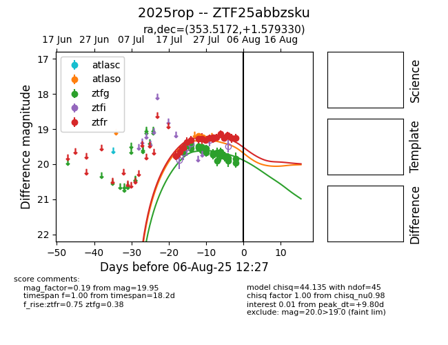

Target 2025rop at 2025-08-11 21:25, see:
FINK: fink-portal.org/2025rop
Lasair: lasair-ztf.lsst.ac.uk/objects/2025rop
ALeRCE: alerce.online/object/2025rop
TNS: wis-tns.org/object/2025rop
YSE: ziggy.ucolick.org/yse/transient_detail/2025rop
alt names
ZTF25abbzsku (ztf,fink)
2025rop (tns,yse)
ATLAS25iat (atlas)
PS25gav (panstarrs)
coordinates:
equatorial (ra, dec) = (353.5172,+1.57933)
galactic (l, b) = (86.8669,-55.77835)
photometry
last atlasc=19.47, atlaso=19.07, ztfg=19.82, ztfr=18.99
1 atlasc, 5 atlaso, 28 ztfg, 21 ztfr detections
